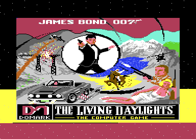

<meta charset="utf-8">
<meta name="viewport" content="width=device-width, initial-scale=1">
<title>The Living Daylights: graphics</title>
<link rel="preconnect" href="https://fonts.googleapis.com">
<link rel="stylesheet" href="https://fonts.googleapis.com/css2?family=Lato:wght@400;700;900&family=IBM+Plex+Mono:wght@400;500&display=swap">
<style>
:root{
  --bg:#23262d; --paper:#e9e7e1; --surface:#ffffff; --surface-2:#f1efea; --line:#d5d3cc; --line-soft:#e0ded8;
  --ink:#2f3136; --ink-soft:#55585f; --ink-mute:#80838a;
  --link:#1f5fa8; --link-hover:#154480; --accent:#1f5fa8;
  --amber:#c25a00; --cyan:#1f5fa8; --coral:#d04a3a; --green:#2a8a4a; --violet:#4a5bd6; --hl:#fff0c2;
  --chip:#2f3136; --chip-ink:#ffffff;
  --c64blue:#40318d; --c64grey:#686868;
  --fd:'Lato',system-ui,sans-serif; --fb:'Lato',system-ui,sans-serif; --fm:'IBM Plex Mono',ui-monospace,Menlo,monospace;
  --col:1080px; --gx:68px; --fs:17px; --lh:1.6; --hw:900; --h1:46px; --h2:26px; --sy:48px; --pp:26px; --r:10px;
  --plate-shadow:0 1px 2px rgba(0,0,0,.05),0 4px 14px rgba(0,0,0,.05);
}
*{box-sizing:border-box}
html{background:var(--bg);min-height:100%}
body{background:var(--paper);color:var(--ink);font-family:var(--fb);font-size:var(--fs);line-height:var(--lh);max-width:var(--col);margin:0 auto;min-height:100vh;padding:0 0 4rem}
h1,h2,h3{font-weight:var(--hw);letter-spacing:-.01em;text-wrap:balance;color:var(--ink);margin:0}
.wrap{padding:0 var(--gx)}
.hero{padding:48px var(--gx) 8px;text-align:left}
.eyebrow{font-family:var(--fm);font-size:12px;letter-spacing:.08em;text-transform:uppercase;color:var(--ink-mute);margin:0 0 10px}
.hero h1{font-size:var(--h1);line-height:1.15;letter-spacing:-.02em;margin:0 0 14px}
.hero .sub{margin:0 0 .6em;color:var(--ink-soft)}
section{padding:var(--sy) 0 24px}
section:last-of-type{border-bottom:none}
.fig{font-family:var(--fm);font-size:12px;letter-spacing:.08em;text-transform:uppercase;color:var(--ink-mute);margin:0 0 10px}
h2.t{font-size:var(--h2);margin-bottom:12px}
.lede{color:var(--ink-soft);margin:0 0 30px}
.plate{background:var(--surface);border:1px solid var(--line);border-radius:var(--r);padding:var(--pp);box-shadow:var(--plate-shadow)}
.cap{font-size:14px;color:var(--ink-mute);margin-top:14px;line-height:1.55}
.cap b{color:var(--ink);font-weight:700}
code{font-family:var(--fm);font-size:.82em;background:var(--chip);color:var(--chip-ink);border-radius:4px;padding:2px 6px;overflow-wrap:break-word;-webkit-box-decoration-break:clone;box-decoration-break:clone}

.ft-grid{display:grid;gap:6px}
.ft-grid button{padding:0;position:relative;line-height:0}
.ft-grid canvas{width:100%;image-rendering:pixelated;display:block}
.ft-tag{position:absolute;left:3px;top:3px;font:500 11px/1.3 var(--fm);background:rgba(255,255,255,.88);color:var(--ink);border-radius:3px;padding:1px 4px}
.ft-mark{position:absolute;right:3px;bottom:3px;font:500 10px/1.3 var(--fm);background:var(--chip);color:var(--chip-ink);border-radius:3px;padding:1px 4px}
.ft-big canvas{width:100%;max-width:768px;image-rendering:pixelated;display:block;margin:0 auto}
.ft-table{border-collapse:collapse;font-size:14px;width:100%}
.ft-table td,.ft-table th{border-bottom:1px solid var(--line-soft);padding:5px 8px;text-align:left;vertical-align:top}
.ft-two{display:grid;grid-template-columns:1fr 1fr;gap:16px;align-items:start}
.ft-four{display:grid;grid-template-columns:repeat(3,1fr);gap:12px;margin:0 0 20px}
.ft-four .plate,.ft-two .plate{margin:0;padding:12px}
.ft-shot,.ft-px{width:100%;height:auto;image-rendering:pixelated;display:block}
.ft-wide{max-width:960px;margin:0 auto}
.plate{margin:0 0 22px}
.ft-scroll{overflow-x:auto}
.ft-lab{display:block;font-family:var(--fm);font-size:13px;color:var(--ink-soft);margin:6px 0}
.ft-range{width:100%;max-width:520px;display:block}
.ft-controls{display:grid;grid-template-columns:repeat(3,1fr);gap:14px;margin:12px 0 0}
.ft-read{font-family:var(--fm);font-size:14px;background:var(--surface-2);border-radius:6px;padding:10px 12px;margin:12px 0 0}
.ft-bar-out{height:12px;background:var(--surface-2);border:1px solid var(--line);border-radius:6px;overflow:hidden;margin:10px 0 0;max-width:520px}
.ft-bar-out div{height:100%;background:repeating-linear-gradient(45deg,var(--amber) 0 6px,#e08a3c 6px 12px)}
.ft-meter{position:relative;width:110px;height:18px;background:var(--surface-2);border:1px solid var(--line);border-radius:4px;overflow:hidden}
.ft-meter span{position:absolute;left:0;top:0;bottom:0;background:var(--cyan);opacity:.35}
.ft-meter b{position:relative;font:500 12px/18px var(--fm);padding-left:6px}
.ft-objs{white-space:nowrap}
.ft-obj{display:inline-flex;flex-direction:column;align-items:center;margin:0 3px 0 0;padding:2px;background:#222;border-radius:4px;vertical-align:top}
.ft-obj i{font:500 10px/1.2 var(--fm);color:#fff;font-style:normal}
.ft-swapped{outline:2px dashed var(--amber);outline-offset:-2px}
.ft-swapped i{text-decoration:line-through;text-decoration-color:var(--amber)}
.ft-table canvas{background:#222;border-radius:4px;image-rendering:pixelated}
.ft-dead{display:flex;flex-wrap:wrap;gap:6px;margin:12px 0 0}
.ft-dead button{font-size:12px;padding:4px 8px}
@media (max-width:760px){:root{--gx:16px;--h1:36px;--pp:14px}.ft-two,.ft-four,.ft-controls{grid-template-columns:1fr}}
sup.fn{font-size:.7em;line-height:0}
sup.fn a{text-decoration:none}
sup.fn + sup.fn::before{content:","}
.overview-shot{margin:22px 0}
.overview-shot img{width:100%;max-width:768px;height:auto;aspect-ratio:384/272;image-rendering:pixelated;display:block}
.overview-shot figcaption{font-size:14px;color:var(--ink-mute);margin-top:8px;max-width:768px}
</style>
<!-- tabs -->
<header class="hero">
  <p class="eyebrow">Commodore 64 · 1987 · Domark</p>
  <h1>The Living Daylights: graphics</h1>
  <p class="sub">Bond in three sprites, every sprite shape the game draws with, the hard hat drawn onto his head a shape at a time, the packing that fits ten screens into memory, and the loading picture.</p>
</header>
<main class="wrap">

<section id="bond">
  <p class="fig">01 · Bond</p>
  <h2 class="t">Bond is three sprites</h2>
  <p class="lede">A C64 sprite is 24 pixels wide and 21 high, too small for a running man. Bond is three: sprite 6 is his head and body, and sprites 4 and 5 are the two halves of his legs, side by side below it (<a href="source.html#3EC7"><code>$3EC7</code></a>).</p>
  <div class="plate">
    <div class="ft-controls" style="grid-template-columns:repeat(3,auto);justify-content:start;margin:0 0 14px">
      <label class="ft-lab">Move <select id="tldAnim"></select></label>
      <label class="ft-lab"><button id="tldPlay" type="button">Pause</button></label>
      <label class="ft-lab"><input type="checkbox" id="tldSplit"> Pull the three sprites apart</label>
    </div>
    <canvas id="tldBond" class="ft-px" style="max-width:420px"></canvas>
    <div class="ft-read" id="tldBondRead"></div>
    <p class="cap">Each frame is drawn from the game's tables: the shape numbers from <a href="source.html#349B"><code>$349B</code></a> (running), <a href="source.html#341C"><code>$341C</code></a> (rolling), <a href="source.html#33C2"><code>$33C2</code></a> and the heights from <a href="source.html#33C8"><code>$33C8</code></a> (jumping), and <a href="source.html#35A0"><code>$35A0</code></a> to <a href="source.html#35A8"><code>$35A8</code></a> (the four ways he aims), at the places <a href="source.html#3EC7"><code>$3EC7</code></a> puts the three sprites. A table gives the first of the three shapes, and the game takes the next two for the legs (<a href="source.html#348F"><code>$348F</code></a>). The colours are Gibraltar's: white for the top sprite and dark grey for the legs, with black and orange shared by every sprite.</p>
  </div>
  <p>Bond aims in four directions, and the game picks the pose from where the crosshair is (<a href="source.html#3566"><code>$3566</code></a>). Running has ten frames, stepped every seventh frame of play while he walks and sooner while he runs, with a footstep at the second and seventh (<a href="source.html#3455"><code>$3455</code></a>). The game writes the sprites twice in each frame, once for the top of the screen and once for the bottom, from two sets of copies in zero page (<a href="source.html#35AC"><code>$35AC</code></a>, <a href="source.html#3625"><code>$3625</code></a>), so the same eight sprites can show different things above and below line <code>$92</code>.</p>
</section>

<section id="sprites">
  <p class="fig">02 · Every shape</p>
  <h2 class="t">160 sprite shapes, and more in each level</h2>
  <p class="lede">The game keeps 160 sprite shapes at <code>$4800</code>-<code>$6FFF</code>, numbers <code>$20</code> to <code>$BF</code>. A shape's number is its address divided by 64, counted from the start of the video bank at <code>$4000</code>.</p>
  <div class="plate">
    <div class="ft-controls" style="grid-template-columns:repeat(3,auto);justify-content:start;margin:0 0 14px">
      <label class="ft-lab"><input type="checkbox" id="tldMC" checked> Multicolour (two pixels wide)</label>
      <label class="ft-lab">Sprite colour <select id="tldCol"></select></label>
      <label class="ft-lab"><input type="checkbox" id="tldHat"> Hard hat on</label>
    </div>
    <div id="tldSheet"></div>
    <p class="cap">Each shape is drawn from its 63 bytes on the Source tab and labelled with its number. The two shared colours are black and orange, as the game sets them on Gibraltar; the third is the sprite's own colour. Every sprite in play is multicolour, except the crosshair and the cursor at Q branch.</p>
  </div>
  <div class="ft-scroll"><table class="ft-table" style="max-width:820px">
    <thead><tr><th>Shapes</th><th>What they are</th></tr></thead>
    <tbody>
      <tr><td><code>$20</code>-<code>$3D</code></td><td>Bond running, ten frames of three sprites</td></tr>
      <tr><td><code>$3E</code>-<code>$4F</code></td><td>Bond rolling, with <code>$26</code> before and <code>$9A</code> and <code>$20</code> after</td></tr>
      <tr><td><code>$50</code>-<code>$58</code></td><td>Bond jumping (with <code>$3B</code>)</td></tr>
      <tr><td><code>$59</code>-<code>$64</code></td><td>Bond aiming: four heads and bodies, then four of each half of his legs</td></tr>
      <tr><td><code>$65</code>-<code>$7E</code></td><td>The companion on levels 2 to 4, two sprites a frame: running, then stumbling (<a href="source.html#350C"><code>$350C</code></a>, <a href="source.html#353B"><code>$353B</code></a>)</td></tr>
      <tr><td><code>$7F</code></td><td>The crosshair</td></tr>
      <tr><td><code>$80</code>-<code>$87</code></td><td>Q branch's pictures of the crossbow, bazooka, sleep dart gun, grenade, ghetto blaster, missile pen, cigarette, and bomb (<a href="source.html#2B6A"><code>$2B6A</code></a>)</td></tr>
      <tr><td><code>$88</code></td><td>Q branch's cursor, a frame drawn at double size</td></tr>
      <tr><td><code>$89</code>-<code>$BF</code></td><td>The figures that rise from the scenery, in five kinds (<a href="source.html#2293"><code>$2293</code></a>), the pipe worker, Bond lying down (<code>$AA</code>-<code>$AC</code>), a figure falling (<code>$B8</code>-<code>$BD</code>, <a href="source.html#2333"><code>$2333</code></a>), and the doorways' figure (<code>$BE</code>)</td></tr>
    </tbody>
  </table></div>
</section>

<section id="level-shapes">
  <p class="fig">03 · Shapes that come with a level</p>
  <h2 class="t">The helicopter is packed with the Mansion</h2>
  <p class="lede">Some things appear on one level only, and their shapes are packed with that level's scenery, at shape numbers <code>$E8</code> and up, in the memory every level overwrites (<a href="levels.html">Maps</a>). The pictures of Q's last four gadgets are packed with Q branch's room in the same way.</p>
  <div class="plate">
    <div id="tldLevelShapes"></div>
    <p class="cap">Each row is drawn after the page has unpacked that screen with the game's own <a href="source.html#30CB"><code>$30CB</code></a>, as on the Maps tab. The helicopter is three sprites, 24 pixels apart (<a href="source.html#1810"><code>$1810</code></a>).</p>
  </div>
</section>

<section id="hard-hat">
  <p class="fig">04 · The hard hat</p>
  <h2 class="t">A hat drawn into 25 shapes, one a frame</h2>
  <p>Choosing the hard hat on The Pipeline puts it on Bond's head, in every pose he can take: the game draws the hat into 25 of his sprite shapes, one shape each frame, by flipping the hat's pixels in with an exclusive-or (<a href="source.html#70EF"><code>$70EF</code></a>). The 25 places, and how many rows of hat each gets, are tables at <a href="source.html#713A"><code>$713A</code></a> to <a href="source.html#7185"><code>$7185</code></a>, and the hat's pixels are at <a href="source.html#719E"><code>$719E</code></a>. Flipping the same pixels again takes it off, which the game does at the start of the next level (<a href="source.html#7124"><code>$7124</code></a>). Tick "Hard hat on" above to run the game's routine on the shapes and see which 25 change.</p>
</section>

<section id="packed">
  <p class="fig">05 · Packing</p>
  <h2 class="t">Ten screens in 25 KB</h2>
  <p class="lede">Each level unpacks to about 9 KB: its own characters, a map of 3,680 characters, and their colours. Ten such screens, eight levels, Q branch's room, and the title, would not fit beside the game, so they are kept packed three times over and unpacked when needed (<a href="source.html#30CB"><code>$30CB</code></a>).</p>
  <p>The outer layer is a Huffman code: the commonest bytes get the shortest codes of bits. The decoder walks a tree from its root for every byte, taking the left or the right branch for each bit read (<a href="source.html#311E"><code>$311E</code></a>). The tree is one table for all ten screens, three pages at <a href="source.html#9D00"><code>$9D00</code></a>: a page of flags saying whether a branch ends in a byte, and a page each of left and right branches. Under the Huffman code is a run-length code, where the byte <code>$27</code> is followed by a byte to repeat and how many times (<a href="source.html#321E"><code>$321E</code></a>). Last, the colours are packed two to a byte, one in each half, and spread out again (<a href="source.html#319D"><code>$319D</code></a>).</p>
  <div class="ft-scroll"><table class="ft-table" style="max-width:640px">
    <thead><tr><th>Screen</th><th>Packed at</th><th>Bytes</th></tr></thead>
    <tbody>
      <tr><td>0 Gibraltar</td><td><a href="source.html#ACD1"><code>$ACD1</code></a></td><td>2,936</td></tr>
      <tr><td>1 Concert Hall</td><td><a href="source.html#B849"><code>$B849</code></a></td><td>3,058</td></tr>
      <tr><td>2 The Pipeline</td><td><a href="source.html#C43B"><code>$C43B</code></a></td><td>3,517</td></tr>
      <tr><td>3 The Mansion</td><td><a href="source.html#0200"><code>$0200</code></a></td><td>2,585</td></tr>
      <tr><td>4 The Fairground</td><td><a href="source.html#0C19"><code>$0C19</code></a></td><td>1,255</td></tr>
      <tr><td>5 Tangiers</td><td><a href="source.html#D1F8"><code>$D1F8</code></a></td><td>2,916</td></tr>
      <tr><td>6 Afghanistan</td><td><a href="source.html#DD5C"><code>$DD5C</code></a></td><td>2,953</td></tr>
      <tr><td>7 Whittaker's House</td><td><a href="source.html#E8E5"><code>$E8E5</code></a></td><td>1,552</td></tr>
      <tr><td>8 Q branch and the title's graphics</td><td><a href="source.html#EEF5"><code>$EEF5</code></a></td><td>3,155</td></tr>
      <tr><td>9 The title and the ending</td><td><a href="source.html#FB48"><code>$FB48</code></a></td><td>1,022</td></tr>
    </tbody>
  </table></div>
  <p>The packed screens fill every corner the game can spare: below the program at <code>$0200</code>, where the system's own work area would normally be, and the top of memory from <code>$ACD1</code> to <code>$FF45</code>, including the 4 KB of RAM hidden under the I/O chips at <code>$D000</code>. The game is loaded with those 4 KB at <code>$8D00</code>, and the first thing it does is copy them up under the chips (<a href="source.html#3F2E"><code>$3F2E</code></a>). The Pipeline's stream runs straight across the I/O chips' addresses from <code>$CC3B</code> into <code>$D000</code>.</p>
</section>

<section id="loading">
  <p class="fig">06 · The loading picture</p>
  <h2 class="t">A picture loaded over by the game</h2>
  <figure class="overview-shot"><figcaption>The loading picture, as the emulator showed it while the disk loaded.</figcaption></figure>
  <p>The picture is a multicolour bitmap kept in two files of its own on the disk: <code>TLD7</code> holds the bitmap and its screen colours, and <code>TLD6</code> the colours that go straight into the colour memory at <code>$D800</code>. The loader shows it while the rest of the game loads, and the game's own files then load over it, so none of it is in memory in play and none of it is on the Source tab.</p>
</section>

</main>

</main>

<footer style="margin:16px 0 0;padding:22px var(--gx) 0;border-top:1px solid #e0ded8;font-family:'IBM Plex Mono',ui-monospace,Menlo,monospace;font-size:12px;color:#80838a"><a href="https://github.com/gamesexplained/gamesexplained" style="color:#1f5fa8;text-decoration:none">GitHub</a> · <a href="https://discord.gg/3V9GWyRDWV" style="color:#1f5fa8;text-decoration:none">Discord</a><br>© Games Explained contributors. Write-ups, facts and symbol maps are available under <a href="https://creativecommons.org/licenses/by-sa/4.0/" style="color:#1f5fa8;text-decoration:none">CC BY-SA 4.0</a>; code under <a href="https://opensource.org/licenses/MIT" style="color:#1f5fa8;text-decoration:none">MIT</a></footer>
<script src="../../lib/c64.js"></script>
<script src="../../lib/cpu6502.js"></script>
<script>
(function () {
  const $ = id => document.getElementById(id);
  if (typeof C64 === 'undefined' || typeof C64Cpu === 'undefined') {
    $('tldBondRead').textContent = 'This widget needs the site\'s shared scripts: open the page from the built site.';
    return;
  }
  const P = C64.PAL, MC1 = P[0], MC2 = P[8];
  let ram, hat = null;
  const shape = (m, p) => m.subarray(0x4000 + p * 64, 0x4000 + p * 64 + 63);
  // The game's hard_hat_remove ($7124) with $0151 = 1 runs all 25 steps of hard_hat_step ($70EF),
  // flipping the hat into Bond's shapes; it touches no chip register.
  function withHat() {
    if (hat) return hat;
    const m = ram.slice(), cpu = new C64Cpu.CPU(m, { port: 0x35, io: { read: a => 0, write: () => {} } });
    m[0x0151] = 1; cpu.call(0x7124, {}, { maxSteps: 1e6 });
    return (hat = m);
  }
  const mem = () => $('tldHat').checked ? withHat() : ram;

  // Bond: sprite 6 (head and body) at x $5A, y $96; sprite 5 (left legs) at $4F, $AB; sprite 4 (right legs) at $67, $AB.
  const ANIMS = {};
  function bondFrames(m) {
    const t = (a, n) => Array.from(m.subarray(a, a + n));
    const run = t(0x349B, 10).map(p => ({ p, dy: 0 }));
    const roll = t(0x341C, 9).map(p => ({ p, dy: 0 }));
    let h = 0; const jump = t(0x33C2, 6).map((p, i) => { h += (m[0x33C8 + i] << 24 >> 24); return { p, dy: h }; });
    const aim = [0, 1, 2, 3].map(i => ({ head: m[0x35A0 + i], left: m[0x35A4 + i], right: m[0x35A8 + i], dy: 0 }));
    return { run: ['Running (ten frames)', run], roll: ['Rolling (nine frames)', roll], jump: ['Jumping (six frames)', jump], aim: ['Aiming (four poses)', aim] };
  }
  let frame = 0, playing = true, timer = null;
  function drawBond() {
    const m = mem(), A = bondFrames(m), [label, fr] = A[$('tldAnim').value], f = fr[frame % fr.length], s = 4, split = $('tldSplit').checked;
    const ctx = C64.canvas($('tldBond'), 100 * s, 56 * s);
    ctx.fillStyle = P[6]; ctx.fillRect(0, 0, 100 * s, 56 * s);
    const head = f.head !== undefined ? f.head : f.p, left = f.left !== undefined ? f.left : f.p + 1, right = f.right !== undefined ? f.right : f.p + 2;
    const gap = split ? 4 : 0, ox = 14, oy = 6 + 2;
    const y0 = oy + 2 + f.dy;
    C64.drawSpriteMC(ctx, shape(m, head), (ox + 0x5A - 0x4F + gap) * s, (y0 - gap) * s, s, P[1], MC1, MC2);
    C64.drawSpriteMC(ctx, shape(m, left), (ox - gap) * s, (y0 + 21 + gap) * s, s, P[11], MC1, MC2);
    C64.drawSpriteMC(ctx, shape(m, right), (ox + 24 + gap) * s, (y0 + 21 + gap) * s, s, P[11], MC1, MC2);
    const hx = n => '$' + n.toString(16).toUpperCase().padStart(2, '0');
    $('tldBondRead').textContent = label + ' · frame ' + (frame % fr.length + 1) + ' of ' + fr.length + ' · shapes: head and body ' + hx(head) + ', legs ' + hx(left) + ' and ' + hx(right);
  }
  function tick() { frame++; drawBond(); }

  function drawSheet() {
    const m = mem(), mc = $('tldMC').checked, col = P[+$('tldCol').value], s = 2;
    const wrap = $('tldSheet'); wrap.innerHTML = '';
    const grid = document.createElement('div'); grid.className = 'ft-grid';
    grid.style.gridTemplateColumns = 'repeat(auto-fill,minmax(64px,1fr))';
    const changed = $('tldHat').checked ? new Set(Array.from({ length: 0xA0 }, (_, i) => i + 0x20).filter(p => shape(m, p).some((b, i) => b !== ram[0x4000 + p * 64 + i]))) : new Set();
    for (let p = 0x20; p < 0xC0; p++) {
      const b = document.createElement('div'); b.style.position = 'relative'; b.style.background = '#2b2b33'; b.style.borderRadius = '4px';
      const cv = document.createElement('canvas'); const ctx = C64.canvas(cv, 24 * s, 21 * s);
      if (mc) C64.drawSpriteMC(ctx, shape(m, p), 0, 0, s, col, MC1, MC2); else C64.drawSprite(ctx, shape(m, p), 0, 0, s, col);
      cv.style.width = '100%'; b.appendChild(cv);
      const tag = document.createElement('span'); tag.className = 'ft-tag'; tag.textContent = p.toString(16).toUpperCase(); b.appendChild(tag);
      if (changed.has(p)) { b.className = 'ft-swapped'; const k = document.createElement('span'); k.className = 'ft-mark'; k.textContent = 'hat'; b.appendChild(k); }
      grid.appendChild(b);
    }
    wrap.appendChild(grid);
  }

  // Shapes in a level's own buffer: unpack screen 8, then screen n, with unpack_screen ($30CB).
  function unpacked(n) {
    const m = ram.slice(), cpu = new C64Cpu.CPU(m, { port: 0x35, io: { read: a => 0, write: () => {} } });
    m[0x012D] = 8; cpu.call(0x30CB, {}, { maxSteps: 5e7 });
    if (n !== 8) { m[0x012D] = n; cpu.call(0x30CB, {}, { maxSteps: 5e7 }); }
    return m;
  }
  const LEVEL_SHAPES = [
    [2, 'The Pipeline', [[0xEC, 'the pipe worker’s thrown thing'], [0xED, 'the thing along the pipe'], [0xEE, 'the same, flickering']], 0x0F],
    [3, 'The Mansion', [[[0xF0, 0xF1, 0xF2], 'the helicopter'], [0xF3, 'the milkman’s bottle']], 1],
    [4, 'The Fairground', [[0xF4, 'a balloon']], 7],
    [8, 'Q branch', [[0xE8, 'dynamite'], [0xE9, 'mortar'], [0xEA, 'infra sight'], [0xEB, 'hard hat']], 1],
  ];
  function drawLevelShapes() {
    const wrap = $('tldLevelShapes'), s = 3;
    const tbl = document.createElement('table'); tbl.className = 'ft-table';
    for (const [n, name, list, colour] of LEVEL_SHAPES) {
      const m = unpacked(n), tr = tbl.insertRow();
      tr.insertCell().textContent = name;
      const td = tr.insertCell(); td.className = 'ft-objs';
      for (const [ps, what] of list) {
        const arr = Array.isArray(ps) ? ps : [ps];
        const box = document.createElement('span'); box.className = 'ft-obj';
        const cv = document.createElement('canvas'), ctx = C64.canvas(cv, (24 * arr.length) * s, 21 * s);
        arr.forEach((p, i) => C64.drawSpriteMC(ctx, shape(m, p), i * 24 * s, 0, s, P[colour], MC1, MC2));
        box.appendChild(cv);
        const lab = document.createElement('i');
        lab.textContent = arr.map(p => '$' + p.toString(16).toUpperCase()).join(' ') + ' ' + what; box.appendChild(lab);
        td.appendChild(box);
      }
    }
    wrap.appendChild(tbl);
  }

  C64.load('listing.json').then(L => {
    ram = L.ram;
    const sel = $('tldAnim');
    for (const [k, v] of Object.entries(bondFrames(ram))) { const o = document.createElement('option'); o.value = k; o.textContent = v[0]; sel.appendChild(o); }
    sel.onchange = () => { frame = 0; drawBond(); };
    $('tldSplit').onchange = drawBond;
    $('tldPlay').onclick = () => { playing = !playing; $('tldPlay').textContent = playing ? 'Pause' : 'Play'; if (playing) timer = setInterval(tick, 140); else clearInterval(timer); };
    const cs = $('tldCol');
    ['black', 'white', 'red', 'cyan', 'purple', 'green', 'blue', 'yellow', 'orange', 'brown', 'light red', 'dark grey', 'grey', 'light green', 'light blue', 'light grey']
      .forEach((nm, i) => { const o = document.createElement('option'); o.value = i; o.textContent = nm; if (i === 1) o.selected = true; cs.appendChild(o); });
    cs.onchange = drawSheet; $('tldMC').onchange = drawSheet;
    $('tldHat').onchange = () => { drawSheet(); drawBond(); };
    drawBond(); timer = setInterval(tick, 140);
    drawSheet(); drawLevelShapes();
  });
})();
</script>
